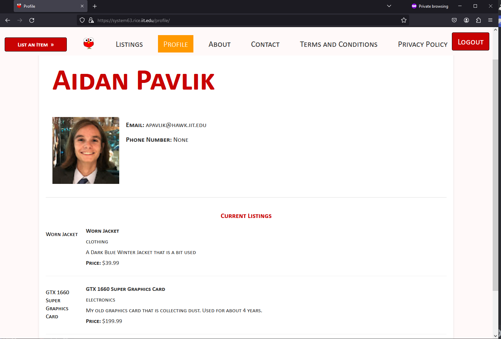
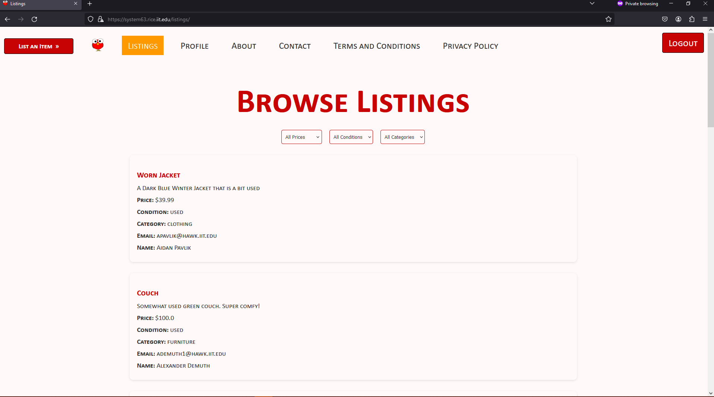
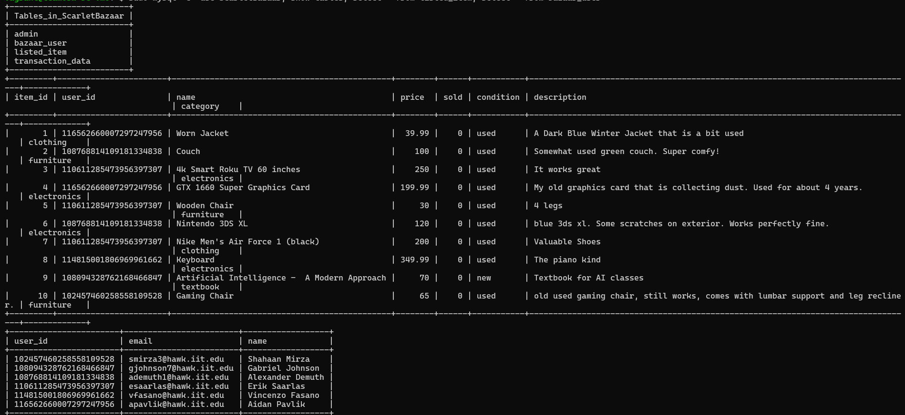
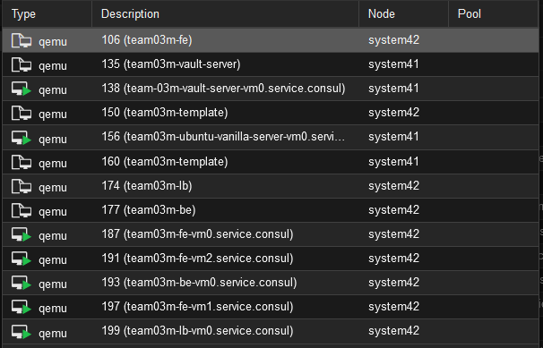
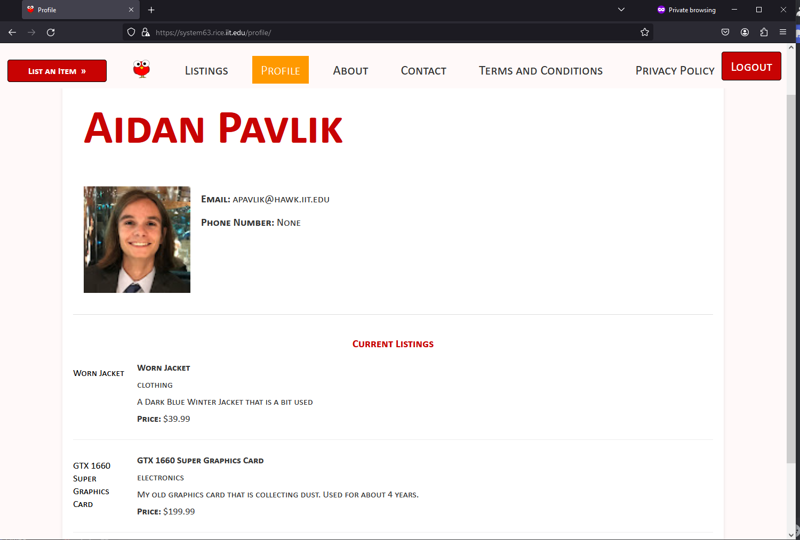
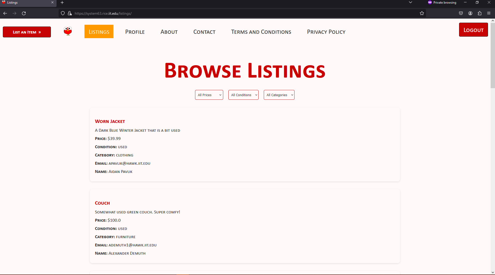
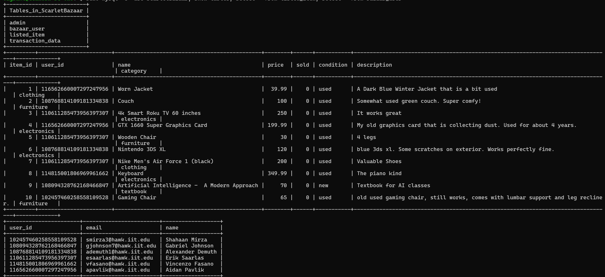
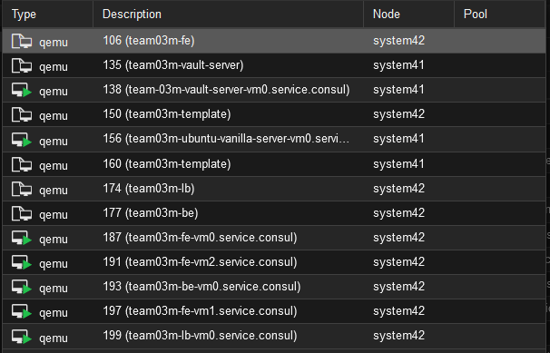

Student Review Database
Flask based Web Application
Hosts the MySQL Database on AWS
A Web application built to allows student to review classes and Professors. Features include
- Account creation
- Account information
- Professor list
- Professor view
- Class list
- Class view
- Leave review on specific classes
- Leave review on specific professors
- Update your reviews
- Delete your reviews


Flutter Yahtzee
Uses the Flutter Framework to create Yahtzee and allows the user to play a full game against themselves
Allows Users to select which dice they want to keep
Allows users to pick what category they want to pick after 3 dice rolls
Keeps track of a users points until the game is over or the user resets the game
Allows users to pick a category they have no points in to get 0 points
Cybergoose
A cybersecurity application built to scan your PC for weaknesses
It will allow an admin to set what the standards will be and then scan all the computers using that standard
If the standard is not met, it will alert that user and have them change settings to meet standards
When choosing a password, it will use the custom requirements and force the user to follow them
Includes a custom dashboard to track how complient each device is
Creates graphs to easily tell how complient your workplace is
Saves data in a secure Database hosted on AWS
Video Demoonstraction: Click Here


Hawk Bizzare
A Flask Web Application that servers as a College Marketplace for a specific school
A platform for Illinois Tech Students to Buy and Sell various school related supplies (Ex: Text Books , Furnature, Archetect Tools, etc.)
Uses the Google Oauth API to track logins and prevent out of school accounts from logging in.
Pulls data such as name, email, and profile image using Google Oauth to use throughout the application and can be viewed in the profile page
Allows users to add their own listings and then view them both in the public listings page, and their private profile page
Uses a MySQL Database to store all the information which is hosted on a live Ubuntu Server along with the application
Uses Vault to secure any secrets that we might have in the application


 







Get Sunset Application
A Basic Website that uses the Sunset Sunrise API to get sunsets at certain locations
Also Uses Current Location API to get Sunset Information for your current location
Github Repo


Custom Search Engine
Broken Down into 3 sections
- Web Scrapper
- Indexer
- Processor
The web crawler will take a starting link and it will begin scrapping at that link and will go a predefined distance before stopping. From there based on the Max pages and Max Length entered into the python file, it will go and start scraping the web and downloading HTML files using the start link as the basis. This was my first time ever using a web scraper, it may not be the best, but I feel that it is more than acceptable for the purpose of this assignment.
The indexer will take all of the provided HTML documents obtained by the web crawler and it will create the inverted index using TF-IDF score/weight representation, Cosine similarity. It does this by extracting the text from the files and parsing it. It also has a built-in system to use stop words to help make it much more efficient.
The process is a Flask Based processor that is capable of using free text queries and uses JSON to handle them. It does this by creating a local Flask webserver to run everything and then when a POST request is made with the query, it uses the index that was already created to pull out the most relevant documents. It will continue running until the user manually shuts it down. This allows the user to enter as many queries as they wish without needing to restart everything.